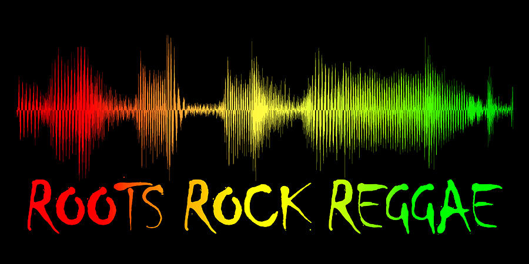

ROOTS, ROCK, REGGAE!
Currently playing:

Playlist created by:mamatrish
12 tracks
42 minutes
Rating:
-
Burn it Down:
Jo Mersa Marley featuring Yohan Marley
4:07
-
Survival 76 Cypher
Skip Marley, Tifa, Agent Sasco, Tanya Stephens,
Jo Mersa Marley, Kabaka Pyramid
6:22
-
Can't Breath
Kabaka Pyramid
4:02
-
Roots and Culture
Mikey Dread
6:08
-
Bam Bam
Sister Nancy
3:16
-
It's a Pity
Tanya Stephens
4:14
-
Back to Normal
Anthony B, Massive B
3:11
-
Chill Out
Anthony B
4:02
-
African Boy
King Perryy
3:37
-
In Love with You
Eryka Badu, Stephen Marley
5:21
-
It Was Written
Damian Marley
5:48
-
Mr. Rastaman
Kabaka Pyramid, Tifa
3:24
A Little Hippity Dippity
Next up:
Playlist created by:mamatrish
14 tracks
89 minutes
-
Permanent Holiday
Mike Love
5:22
-
Cukoo
Rising Appalachia
4:49
-
Sing to the Mountain
Elephant Revival
4:08
-
Filthy Dirty South
Rising Appalachia
3:16
-
Wild World
Cat Stephens
4:14
-
Pinball Wizard
The Who
3:11
-
She's not There
The Zombies
4:02
-
Medicine
Rising Appalachia
3:48
-
Eve of Destruction
Barry McGuire
5:16
-
Catalyst
Rising Appalchia
4:48
-
These are my Roots
Mike Love
4:24
-
Occupy
Rising Appalchia
6:48
-
Me and Bobby McGee
Janis Joplin
3:24
-
Rhiannon
Fleetwood Mac
4:24
Sunday Morning Mix!
For Later:
Playlist created by:mamatrish
12 tracks
69 minutes
-
Ain't No Sunshine:
Bill Withers
4:45
-
You are the Best Thing
Ray Lamontagne
5:27
-
Moondane
Van Morrison
3:32
-
I'm Yours
Jason Mraz
4:08
-
Jack and Diane
John Melloncamp
4:26
-
Colors
Black Pumas
4:55
-
Sally Can Wait
The Marshall Project
3:11
-
Wildflowers
Tom Petty
4:33
-
I Try
Macy Gray
3:57
-
Bubble Toes
Jack Johnson
4:21
-
The Joker
Steve Miller Band
4:48
-
Liar Liar
Cris Cab
3:47